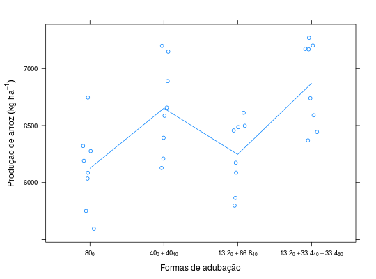

Dados de um estudo sobre adubação nitrogenada na cultura do arroz irrigado. Foram testadas quatros formas de aplicação do adubo fazendo o fracionamento das quantidades em diferentes épocas. O experimento foi instalado em delineamento inteiramente casualizado com 8 repetições.
Um data.frame com 32 observações e 3 variáveis
tratreptprodZIMMERMANN (2004), Tabela 3.5, pág. 54.
library(lattice) data(ZimmermannTb3.5)#> Warning: data set ‘ZimmermannTb3.5’ not foundstr(ZimmermannTb3.5)#> 'data.frame': 32 obs. of 3 variables: #> $ adub: Factor w/ 4 levels "1","2","3","4": 1 1 1 1 1 1 1 1 2 2 ... #> $ rept: int 1 2 3 4 5 6 7 8 1 2 ... #> $ prod: num 6276 6035 6086 5594 6321 ...# Quantidade[época]. adub <- expression(80[0], 40[0] + 40[40], 13.2[0] + 66.8[40], 13.2[0] + 33.4[40] + 33.4[60]) xyplot(prod ~ adub, data = ZimmermannTb3.5, type = c("p", "a"), jitter.x = TRUE, xlab = "Formas de adubação", ylab = expression("Produção de arroz"~(kg~ha^{-1})), scales = list(x = list(labels = adub)))aggregate(prod ~ adub, data = ZimmermannTb3.5, FUN = function(x) { c(mean = mean(x), sd = sd(x)) })#> adub prod.mean prod.sd #> 1 1 6125.0000 355.1000 #> 2 2 6651.5000 404.3093 #> 3 3 6247.0000 310.9433 #> 4 4 6869.7500 373.8238